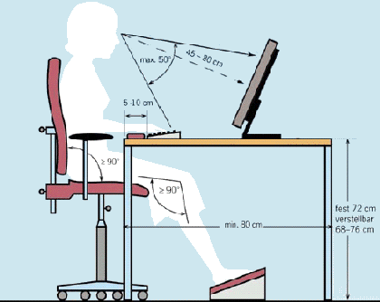

Der Bildschirmarbeitsplatz

- Optimal sind höhenverstellbare Arbeitstische. Auf ausreichenden Bein-
und Fußraum ist zu achten. Der nicht höhenverstellbare
Arbeitstisch sollte 72 cm hoch sein.
- Für den Arbeitsstuhl gibt es Mindestanforderungen: Er muss kippsicher
und fahrbar sein. Eine Sitzhöhenverstellung wird gefordert, ebenso
eine in Neigung und Höhe verstellbare Rückenlehne.
- Die Oberkante des Bildschirms sollte sich unterhalb der Augenhöhe
des Mitarbeiters befinden. Dies bewirkt eine entspannte Kopfhaltung und
eine Verminderung der Sehbelastung.
- Bei Bedarf kann eine Fußstütze verwendet werden.
- Nach Möglichkeit ergonomisch gestaltete Maus verwenden.
- Auf ausreichenden Platz für die Handauflagefläche
vor der Tastatur achten.